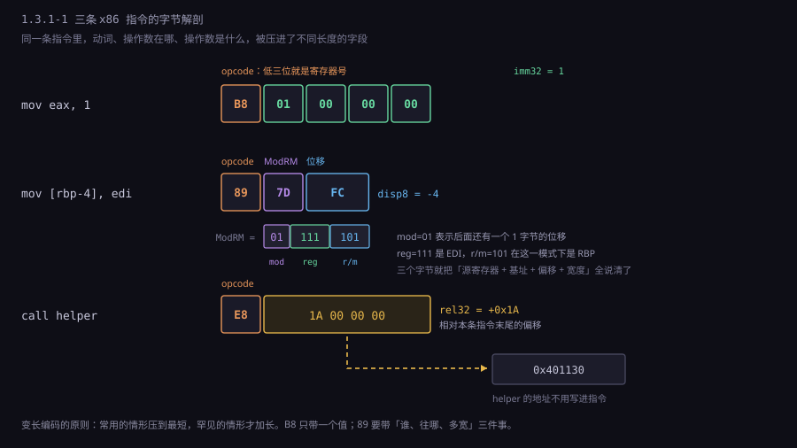
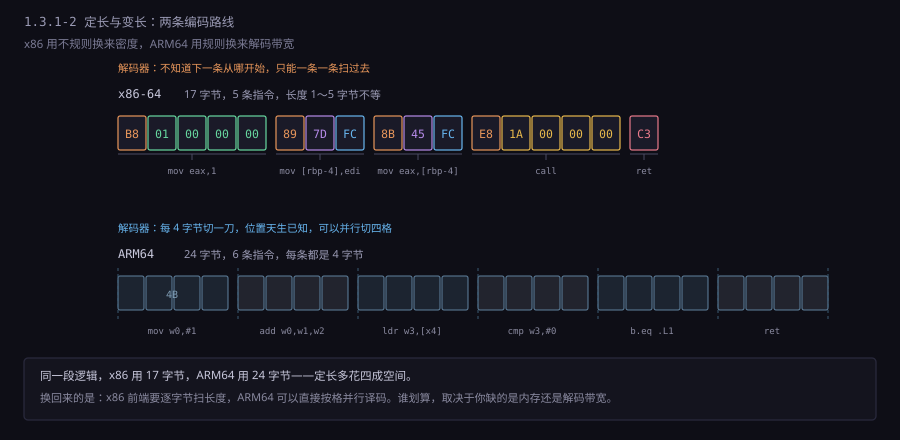
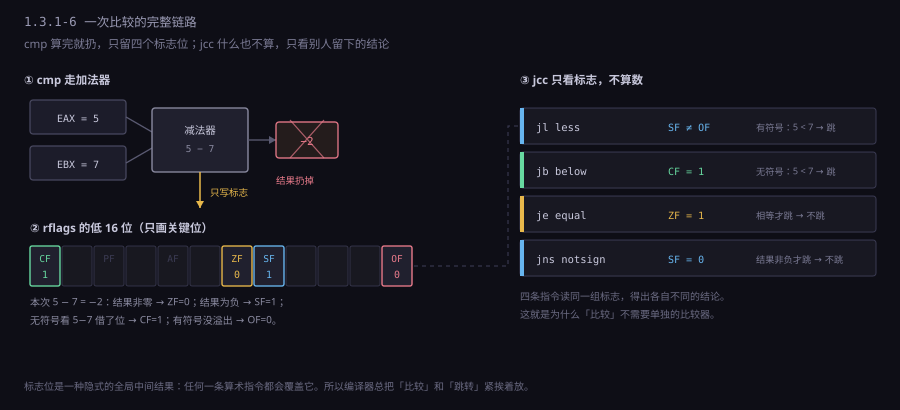

约 1.2 万字 · 6 张图 · 读完你能说清一条指令由哪几段拼起来、 看懂反汇编器吐出来的那几列字节、并且明白 「机器只认识几十条命令」这句话里的「几十条」到底是多少
先看三种写法，它们说的是同一件事：
C 语言： a = 1;
汇编： mov eax, 1
机器码： B8 01 00 00 00
第一行是人想表达什么。第二行是人写给汇编器看的，
用助记符（mnemonic）mov 代替了一个数字。
第三行是机器真正吃的——一串写在内存里的字节，
通常还带着一个「它从哪个地址开始」的信息。
三者不是三种不同的东西，而是同一段含义的三层包装。 C 编译器把第一行变成第二行（还会顺手优化掉很多）， 汇编器把第二行变成第三行。反过来的路也能走： 反汇编器把第三行变回第二行，但它永远变不回第一行—— 变量名、类型、注释、循环结构，全在编译的那一步被抹掉了。 这就是为什么「反编译」出来的代码永远比源码难看。
现在盯住第三行。五个字节，为什么不是一个？
因为 1 要放进 EAX，而 EAX 是一个 32 位的盒子。
你如果想往里放一个任意大的数，就得给足 32 位，也就是 4 个字节。
4 个字节再加上前面那个说明「往哪放、怎么放」的字节，正好五个。
那个 B8 是整条指令的动词。
在 x86 的词汇表里，B8 的意思是「把一个 32 位立即数装进 EAX」。
注意它把两件事捆在了一起：动作是「装立即数」，目标是「EAX」。
换一个目标寄存器，动词就换一个编号：
B8 01 00 00 00 mov eax, 1
B9 01 00 00 00 mov ecx, 1
BA 01 00 00 00 mov edx, 1
BB 01 00 00 00 mov ebx, 1
BC 01 00 00 00 mov esp, 1
BD 01 00 00 00 mov ebp, 1
BE 01 00 00 00 mov esi, 1
BF 01 00 00 00 mov edi, 1从 B8 到 BF 连续八个编号，正好是八个通用寄存器。 看出规律了吗：这八个数的低三位是 000 到 111， 而 000 到 111 正好能编码八个东西。 寄存器号被塞进了操作码的低三位。 这是 x86 编码里最省事的一种做法，代价是「装立即数」这个动作只能占 8 个编号， 想要第 9 个寄存器（x86-64 里的 r8）就塞不进去了——这个坑后面 §2 会讲怎么绕。
再看那个 01 00 00 00。它为什么不是 00 00 00 01？
因为 x86 把低位字节放在低地址。这四个字节从地址 0x1000 开始排，
内存里看到的是：
地址 0x1000 0x1001 0x1002 0x1003
内容 01 00 00 00
↑
最低有效字节在这里这叫小端（little-endian）。它是历史选择的结果， 不是数学上的必然，而且它带来的麻烦比很多人想的多——§8 专门讲。 现在只需要记住：你在反汇编输出里看到的那串字节， 顺序就是内存里的顺序，而不是你写数字时的顺序。
mov eax, 0x123456789 会被拆成
mov eax, 0x23456789 加 mov eax, 0x1 两条）；
它也不是「一次内存访问」，因为一条指令可能访问两次内存。
它的边界由 CPU 的解码器定义，不由人的书写习惯定义。
B8 那条指令太简单，简单到看不出结构。换三条真实的、由 GCC 编出来的指令看看。 下面这段是某个函数被编译后的开头（x86-64，System V 调用约定）：
55 push rbp
48 89 e5 mov rbp, rsp
89 7d fc mov DWORD PTR [rbp-0x4], edi
8b 45 fc mov eax, DWORD PTR [rbp-0x4]
e8 1a 00 00 00 call 401130 <helper>
c3 ret左边一列是字节，中间是反汇编器还原出的汇编，右边是注释。 请把注意力放在字节那一列：长度分别是 1、3、3、3、5、1。 同一个程序里，指令长度差五倍。这就是变长指令。
x86 的一条指令最多可以分成下面这些段，按出现顺序排列：
| 段 | 长度 | 作用 | 例子 |
|---|---|---|---|
| 指令前缀 | 0～4 字节 | 改这一次操作的行为：重复、锁、段覆盖、操作数宽度 | F3 重复 F0 加锁 66 改用 16 位 |
| REX 前缀 | 0～1 字节 | 64 位扩展：加宽到 64 位、访问 r8～r15 | 48 表示 64 位操作 |
| 操作码 | 1～3 字节 | 动词：干什么 | B8 89 E8 0F B6 |
| ModRM | 0～1 字节 | 两个操作数各在哪：寄存器还是内存、怎么算地址 | 45 C3 |
| SIB | 0～1 字节 | 变址寻址的比例、索引寄存器、基址寄存器 | 44 3F |
| 位移 | 0/1/2/4 字节 | 地址里的那个常数偏移 | FC（即 −4） |
| 立即数 | 0/1/2/4/8 字节 | 指令里直接带的那个值 | 01 00 00 00 |

B8：一个动词加四个字节的值。中间一条 89 7D FC 只有三个字节，却表达了「把 EDI 写到 RBP 减 4 那个地址」这么复杂的意思——它的信息被压进了 ModRM 那一个字节的八个比特里（2 位模式、3 位寄存器、3 位基址）。下面一条 E8 是调用，后面四个字节不是地址而是相对当前指令末尾的偏移，所以整段代码搬到内存任何位置都不用改。
挑中间那条 89 7D FC 拆一下，因为它最能说明问题。
89 是操作码，意思是「把寄存器写到内存/寄存器」。它自己不知道是哪个寄存器，
也不知道写到哪，这些信息全在下一个字节里。
7D 是 ModRM，八位拆成三段：高两位 01 是「模式」，
中间三位 111 是「寄存器」，低三位 101 是「基址/目标」。
模式 01 的意思是「后面还有一个 1 字节的位移」；
寄存器 111 是 EDI；基址 101 在这个模式下是 RBP。
于是这条指令的含义已经被完全确定了：
把 EDI 写到「RBP 加上那个 1 字节位移」指向的地址。
最后一个字节 FC 就是这个位移。它是有符号的 8 位数，
FC 按补码读是 −4。所以完整含义是 mov [rbp-4], edi。
三个字节，装下了一个「源寄存器 + 基址寄存器 + 偏移量 + 数据宽度」的四元组。
这就是变长编码的思路：常用的情况用最短的编码，罕见的情况才加长。 RBP 减 4 这种「访问一个局部变量」的操作在真实程序里出现的频率极高， 所以它被压到了三个字节。而访问一个绝对地址（比如全局变量）就要多几个字节， 因为它得带上完整的 32 位地址。
66 66 66 66…），
理论上一条指令可以无限长。硬件需要一个有限的缓冲区去装它，
所以必须有一刀切在哪里。15 这个数字不是美学选择，是「预留得足够宽松，
又不至于让解码器的移位寄存器太贵」的折中。
还有一件事值得注意：操作码不止一个字节。
0F 是一个「逃逸字节」（escape），它的意思是
「这一个字节不是操作码，真正的操作码在下一个字节」。
这个设计是 80386 时代加的，因为 8086 留的一字节操作码空间用光了。
后来 SSE 指令又不够用，于是有了 0F 38、0F 3A 两级逃逸，
操作码变成三字节。你在反汇编输出里看到的 0f b6 c0（movzx eax, al），
开头的 0f 就是这个逃逸。
现在把 x86 放在一边，看看 ARM 怎么做同一件事。
ARM64： mov w0, #1 编码为 20 00 80 52
add w0, w1, w2 编码为 20 00 02 0b
ret 编码为 c0 03 5f d6每一条都是四个字节，一条不多一条不少。 这意味着两件在 x86 上做不到的事：解码器可以每四个字节切一刀， 八条指令可以同时切、同时译；程序跳转到任何一条指令都是对齐的，不用先算长度。
代价是代码变长。mov w0, #1 在 x86 上如果目标是 AL，
只需要两个字节（B0 01）；ARM64 一律四个字节。
一个大量使用小立即数、短跳转、简单寄存器的程序，
ARM64 编译出来的代码体积通常比 x86-64 大 20%～30%。
这不是小事：代码体积大意味着指令缓存更容易装不下，
而指令缓存未命中的代价是几十个周期。
所以 ARM 也做了妥协：Thumb。 一套 16 位的短指令编码，只能访问 8 个寄存器、立即数范围也小， 但体积能省三到四成。后来 Thumb-2 允许 16 位和 32 位混排， 于是 ARM 在 32 位时代也变成了「变长」—— 只不过它的变长规则简单得多，看第一个 16 位字的最高几位就知道该读 2 字节还是 4 字节。

RISC-V 走的是第三条路：基础指令集 32 位定长， 但预留了「低两位不为 11 就是 16 位短指令」的规则， 于是它天然支持变长，而且长度判断只看最低两位，不需要像 x86 那样扫前缀。 这是 2010 年代设计的后发优势：能看到前两家各自踩过的坑。
三条路线各有各的账，可以列成一张表：
| 架构 | 编码长度 | 解码难度 | 代码密度 | 它的理由 |
|---|---|---|---|---|
| x86 / x86-64 | 1～15 字节 | 高：要扫前缀、算长度 | 最好 | 1978 年内存按 KB 计价，省字节就是省钱；之后为了兼容只能加不能改 |
| ARM64（A64） | 固定 4 字节 | 低：按格切 | 较差 | 2000 年代以后内存不再稀缺，解码带宽和功耗变成主要矛盾 |
| ARM Thumb-2 | 2 或 4 字节 | 中：看第一个半字 | 较好 | 微控制器上 Flash 容量直接等于成本 |
| RISC-V | 2 或 4 字节起，可扩 | 低：看最低两位 | 好 | 既要密度又要简单解码，用「长度编码进低两位」同时满足 |
这里有一个很容易被讲错的地方，得说清楚： 变长不等于落后，定长也不等于先进。 现代 x86 处理器内部根本不按 x86 的方式执行。 它把每一条 x86 指令译成一到几个定长的微操作（micro-op，简称 μop）， 后端按 μop 调度。也就是说，在硬件实现层， x86 早就是一台 RISC 机器了，变长的那一层只是一件外壳。 外壳的作用是兼容——让 1978 年的程序还能在 2026 年的芯片上跑。
这件外壳不便宜。它占了 x86 芯片里相当大的一块面积和功耗， 而且解码带宽长期是瓶颈：Intel 的前端每周期能取 16 字节， 但遇到一堆前缀或长指令，实际能译出的指令数会掉下来。 这就是为什么同一代工艺下，x86 的每瓦性能往往不如 ARM—— 它有一部分电，花在了「读懂自己」上。
「一台只认识几十条命令的机器」这句话，容易被误解成「CPU 很笨」。 反过来才对：CPU 的词汇极少，但它能靠组合做出无限的事。 这就像音乐——十二个音，写尽了三百年的曲子。
把 x86-64 的一千多条指令（加上各种前缀和变体，实际编码数量更多） 按做的事分类，只有五类：
| 类别 | 典型指令 | 它把什么搬到哪里 |
|---|---|---|
| 数据搬移 | mov movzx movsx lea push pop xchg | 寄存器↔寄存器、寄存器↔内存、内存↔内存（仅字符串指令） |
| 算术与逻辑 | add sub imul idiv and or xor not shl shr sar | 在寄存器内部做运算，结果留在寄存器里 |
| 控制流 | jmp jcc call ret loop | 改 PC 的值，也就是「下一步去哪」 |
| 内存访问（独立成类） | ARM 的 ldr str ldp stp | 只有这一类指令能碰内存；x86 把它并进了 mov |
| 系统与杂项 | syscall int hlt cpuid rdtsc mfence cli | 和 CPU 之外的世界打交道：进内核、停住、读时间戳、保证内存顺序 |
这张表里没有「打印」，没有「排序」，没有「打开文件」，没有「发一个网络包」。
这些事在机器码层面都不存在。它们要么是一长串 mov / cmp / jcc 的组合，
要么是一条 syscall——把活交给操作系统。
这也是理解「程序」的一个关键转折点： 你在屏幕上看到的一切，最终都是一串「搬数据、算一下、判断、跳走」。 一个 for 循环在机器码里就是「加一、比较、条件跳回」三条指令， 重复执行到你满足条件为止。没有任何一条指令叫「循环」。
五类里最容易被低估的是控制流。 没有它，CPU 只能从头到尾一条条执行，那就是一台计算器而不是计算机。 加了跳转，才有了「如果」「循环」「函数」这三个概念的物理基础。 而跳转的代价是：机器不知道下一步要跳到哪， 于是它没法提前把下一步的指令拿过来——这是后面 1.3.4 讲分支预测的起点。
一条指令要说清两件事：做什么（操作码），对谁做（操作数）。 操作数可以是三种东西：指令里带着的值、 寄存器里的值、内存里某个地址的值。 第三种最麻烦，因为「某个地址」本身又可能是算出来的。
用图书馆打个比方。你要一本书，可以这样告诉管理员：
| 寻址方式 | 图书馆里的说法 | x86 写法 | 用在哪 |
|---|---|---|---|
| 立即数 | 「就这本，我手上这本」 | mov eax, 42 | 常数、掩码 |
| 寄存器 | 「我桌上那张便签写的编号」 | mov eax, ebx | 临时变量 |
| 直接 | 「三楼 302 架」 | mov eax, [0x404000] | 全局变量、静态数据 |
| 寄存器间接 | 「便签上那个编号对应的架子」 | mov eax, [rbx] | 指针解引用 |
| 基址 + 偏移 | 「便签编号加三格」 | mov eax, [rbp-8] | 局部变量、结构体成员 |
| 基址 + 变址×比例 + 偏移 | 「便签编号，隔两格取第 i 本」 | mov eax, [rbx+rcx*4+8] | 数组、结构体数组 |
| PC 相对 | 「从我站的这格往前数 16 格」 | mov eax, [rip+0x2a4c] | 全局变量（PIE）、跳转 |
为什么需要这么多种？因为程序里访问的东西正好分这几类。 数组要「基址 + 下标 × 元素大小」，结构体要「基址 + 成员偏移」， 局部变量要「栈帧基址 − 偏移」，全局变量要「一个固定位置」。 如果只有一种寻址方式，那每种访问都得先用几条 add 算出地址再读——慢且费指令。 硬件直接用一条指令做完整地址计算，是把复杂度压进编码的典型手法。
x86 的变址寻址里有一个细节很能说明「编码是按需求设计的」：
比例因子只能取 1、2、4、8。为什么正好是这四个？
因为 C 语言里 char 是 1 字节、short 是 2、
int 是 4、double 是 8。
这四个数字就是「数组元素大小」的全部可能。
这个字段在 SIB 字节里占两位，一位都不多。
还有一个历史包袱必须提：段寄存器。
8086 的地址总线是 20 位，但寄存器只有 16 位，装不下一个完整地址。
Intel 的解法是用两个 16 位数拼：段:偏移，
实际地址等于段值乘 16 再加偏移。于是内存被切成一个个 64KB 的段，
每个段有一个段寄存器（CS 代码段、DS 数据段、SS 栈段、ES 附加段）。
这在 1978 年是聪明的省钱办法，到 32 位时代就变成了纯粹的负担：
平坦内存模型下所有段基址都是 0，段寄存器只剩下 FS、
GS 还有用——它们是线程局部存储（TLS）的实现方式。
你在 Linux 上调试多线程程序，看到 fs:0x28 这样的地址，
那就是段寄存器最后的一点残余用途：栈保护金丝雀。
为什么不能把变量全放在内存里？因为距离。 从寄存器取一个数，是「零周期」——它就在执行单元旁边， 指令译码的时候值已经到了。从 L1 缓存取，大约 4 个周期； 从内存取，现代机器上是 200 到 300 个周期。 同一个动作，差了两个数量级。
所以 CPU 手里有一小把寄存器，用来放「此刻正在算的东西」。 x86-64 有 16 个通用寄存器，名字是这样的：
| 64 位 | 32 位 | 16 位 | 8 位高/低 | 名字的来历 | 今天的常规用途 |
|---|---|---|---|---|---|
rax | eax | ax | ah/al | accumulator，累加器 | 返回值、乘除法隐含操作数 |
rbx | ebx | bx | bh/bl | base，基址 | 被调用者保存的临时变量 |
rcx | ecx | cx | ch/cl | counter，计数器 | 循环计数、移位量 |
rdx | edx | dx | dh/dl | data，数据 | 乘除法高位、第三个参数 |
rsi | esi | si | — | source index，源变址 | 第二个参数、字符串源 |
rdi | edi | di | — | destination index，目的变址 | 第一个参数、字符串目的 |
rsp | esp | sp | — | stack pointer，栈指针 | 永远指向栈顶，不能挪作他用 |
rbp | ebp | bp | — | base pointer，帧指针 | 指向当前栈帧底部 |
r8～r15 | r8d～r15d | r8w～r15w | r8b～r15b | 没有名字，就是编号 | x86-64 新增的八个 |
这张表里藏着一个完整的计算机史。
ax、bx、cx、dx 的全名分别是累加器、基址、计数、数据——
这些不是随便起的，是 1970 年代每条指令都专用一个寄存器时的分工。
8086 把这些专用寄存器做成了「半通用」的，
于是名字留下来了，专用性却没了。到今天，
你在编译器输出里看到的 rax 大多数时候就是一个普通临时变量，
和「累加」没有半点关系。
更要命的是 ah/al 这种拆分。
8080 是 8 位机器，只有一个 8 位累加器 A。
8086 要兼容它，就把 16 位的 AX 拆成高 8 位和低 8 位，分别叫 AH 和 AL，
这样 8080 的代码可以一字不改地跑。兼容性带来的代价延续了四十年：
写 al 之后读 eax，硬件必须等两个写口合并，
这个等待在老处理器上叫「部分寄存器停顿」，能白白损失几个周期。
现代处理器用寄存器重命名缓解了这个问题，但编码上的怪相保留至今。
ARM64 是 2011 年重新设计的，没有这个包袱：
x0 到 x30 三十一个通用寄存器，加一个栈指针 sp，
加一个恒为零的 xzr。
写 w0 就是写 x0 的低 32 位并清零高 32 位，
语义干净，硬件也好做。
这就是「后发优势」在指令集设计上的具体样子：
不是更聪明，只是不用背历史。
寄存器数量为什么是 16 或 31，而不是 1000？因为编码空间。 x86 用 3 个比特表示寄存器，只能有 8 个；x86-64 加了一个 REX 前缀位，扩到 16 个。 ARM64 用 5 个比特，32 个（其中一个留给零寄存器）。 想要更多寄存器，就得在每条指令里多留几位，指令就变长，代码就变大。 寄存器数量和代码密度是一笔此消彼长的交易。
mov eax, 1 之后再 mov eax, 2 不需要等前一条写完——
它俩被分到了不同的物理寄存器。
架构上只有 16 个，是为了编码省字节；物理上有 180 个，是为了并行。
这两件事被刻意分开了。
除了通用寄存器，还有几类必须知道：
rip（指令指针，指向下一条要执行的指令）、
rflags（标志寄存器，下一节讲）、
ARM64 的 nzcv（四位条件标志）、
以及一堆控制寄存器（页表基址 cr3、调试寄存器、性能计数器）。
它们不在通用编码空间里，只能用专门的指令读写。
一个实操上的观察：如果你用调试器看过程序崩溃时的寄存器快照，
会发现 rip 指向的那条指令往往不是「出错的那条」，
而是它后面几条。原因是现代处理器乱序执行，
rip 反映的是「最后退休的那条」，不是「正在执行的那条」。
这是 1.3.4 的话题，先记着。
最早的程序是手写机器码的。1949 年 EDSAC 上跑第一段程序时， 操作员把一长串十进制数打在纸带上，每个数字是一位「初始指令」—— 那套「初始指令」本身也是一段程序，作用是读纸带、把后面的数字装进内存。 连「装载器」都得靠手写数字来实现。
汇编器的出现就是为了终结这件事。它做的事情简单到可以用一句话说清：
查表替换，加上地址回填。
查表：把 mov 换成 B8，把 add 换成 03，以此类推。
回填：把 jmp loop 里的 loop 换成真实的地址偏移。
回填为什么需要两趟？因为程序里常有「往前跳」：
start:
cmp eax, 0
je done ; done 在下面，此刻还不知道它在哪
...
done:
ret
汇编器读到 je done 的时候，done 还没出现。
它只能先留一个空位（占 4 个字节），记下「这里要填 done 的地址」，
等整段扫完、所有标号的位置都知道了，再回头把空位填上。
这就是两趟扫描（two-pass assembler）。
第一次扫描收集标号，第二次扫描生成字节并回填。 这个模式一直用到今天：现代汇编器仍然分两趟， 只不过「回填」这件事被推迟到了链接阶段—— 如果是跨文件的符号（比如调用另一个 .c 里的函数）， 汇编器根本不知道地址，只能在目标文件里留一条重定位记录， 让链接器最后去填。
反过来，把机器码变回汇编，叫做反汇编。这条路要难得多， 因为信息丢了。反汇编器看到的只是一串字节， 它必须猜「哪里是一条指令的开头」。
x86 上这个猜测可以猜错。同一串字节，
从偏移 0 开始解是一条指令，从偏移 1 开始解可能是完全另一条指令。
更麻烦的是数据：一个跳转表、一段字符串常量、一段被 .byte
直接写进去的数据，在反汇编器眼里和代码没有区别——
它会老老实实把它们「翻译」成指令，输出一堆看上去像代码的垃圾。
所以真实的反汇编输出里常能看到莫名其妙的 (bad)、
或者明显不对的 add byte ptr [rax], al（字节 00 00）。
即便解对了边界，丢的东西也补不回来：
变量名变成 [rbp-0x8]，函数名变成 sub_401130，
结构体变成「基址加几个偏移」，循环变成「往回跳的 jmp」，
内联过的函数根本不存在。加上 -O2 之后，
你写的东西和机器执行的东西已经不是一对一的关系。
这就是为什么逆向工程是件苦活：不是难在读懂指令，是难在重建结构。
401130 <helper>。
因为 call 编码里存的是相对偏移，不是绝对地址。
反汇编器先算出「当前指令末尾 + 偏移」得到目标地址，
再查一遍符号表，把地址翻译成名字。
如果那个地址不在符号表里，就只能显示裸地址 401130。
符号表是链接时留下的副产品，strip 掉之后就再也找不回来了。
一个 32 位整数在内存里占四个字节。这四个字节按什么顺序排， 是计算机史上最无谓、也最纠缠的一场争论。
取 0x12345678，从地址 0x1000 开始放：
0x1000 0x1001 0x1002 0x1003
大端（BE） 12 34 56 78 ← 高位在前，读起来像写出来的样子
小端（LE） 78 56 34 12 ← 低位在前，和书写顺序相反0x1234，小端得到 0x5678。同一个内存内容，读法不同，答案完全不同，这就是所有字节序 bug 的根源。
大端的优点是直觉：内存dump 出来，从左往右读就是数字本身，
调试的时候一眼能认。网络协议因此选了大端，
并且把它命名为「网络字节序」——TCP/IP 头里的端口号、序号、长度，
全是高位在前。你在写 socket 程序时调用的 htons、htonl，
就是在做「主机序 → 网络序」的转换。
小端的优点不那么直观，但它是性能上的： 从低位开始算，加法可以从第一个字节就开始进位。 这在只有 8 位 ALU 的年代是实打实的收益—— 做一次 32 位加法，四个字节从低到高依次加，进位顺着地址往上走， 指针也顺着往上走，一次循环搞定。 反过来如果高位在低地址，就得倒着遍历，指针递减，多花指令。 6502 的间接变址寻址把这个优势放大到了极致，而 6502 又影响了 8086， 8086 影响了整个 x86 家族——于是今天全世界大多数电脑是小端。
这场争论本来在 1980 年代就该结束。IEEE 754 浮点标准、 TCP/IP、POSIX 都选了各自的一边，然后大家学会了「在边界处转换」。 但边界总是有漏的，于是坑一直存在：
| 场景 | 踩的是什么 | 典型症状 |
|---|---|---|
| 读二进制文件 | 文件格式规定了字节序，程序没转 | 读出来的数大得离谱或小得离谱，正好是字节倒过来 |
| 解析网络包 | 协议是大端，直接 memcpy 到结构体 | 端口号变成 0x1F90 这种奇怪的数 |
| 位图与图片格式 | BMP 小端、PNG 大端、JPEG 大端 | 宽高读成几十万，程序申请内存失败 |
| UTF-16 文本 | 没有 BOM 就不知道是 LE 还是 BE | 中文变乱码，英文看起来正常（因为 ASCII 部分高低字节一个是 0） |
| 跨架构通信 | 一端 x86 一端 PowerPC/网络设备 | 只有多字节字段错，单字节字段全对 |
判断一台机器的字节序，最省事的办法不是查资料，是让机器自己说：
Python 里 sys.byteorder 直接返回 'little' 或 'big'；
C 里用一个 union { uint32_t i; uint8_t c[4]; } 写进去再逐个字节读；
命令行上 lscpu 的 Byte Order 一行也写着。
还有一个反直觉的点：字节序只影响「多字节数据在内存里的排布」， 不影响寄存器的值。你把 0x12345678 装进 eax，无论大小端机器， eax 里都是 0x12345678。差别只在你把它写进内存、或者从内存读出来的时候。 所以字节序问题永远出现在跨越「内存表示」这个边界的地方： 文件、网络、共享内存、指针强转。
到这里，机器能搬数、能算数、能跳转。但它还不会「判断」。
if (a < b) 在硬件上是怎么实现的？
答案有点出人意料：没有比较器。
实现比较用的是减法——1.2.3 里那个加法器，把 b 取反加一，再加 a。
减完的结果不写回任何寄存器，只留下一组标志位。
这条「减了但不存」的指令就是 cmp。
标志位里最关键的是四个：
| 标志 | 全名 | 什么时候置 1 | 它回答什么问题 |
|---|---|---|---|
ZF | Zero Flag | 结果为零 | 两个数相等吗 |
SF | Sign Flag | 结果的最高位是 1（即「看起来是负数」） | 结果是负的吗 |
CF | Carry Flag | 无符号运算从最高位进位/借位出去 | 无符号数比大小：a 比 b 小吗 |
OF | Overflow Flag | 有符号运算溢出（两个同号数相加得到异号结果） | 这个结果还可信吗 |

cmp 走的是加法器，算 a + (~b) + 1，结果扔掉，只把四个标志位写进标志寄存器。中间那八位就是 rflags 的低半截，ZF、SF、CF、OF 各占一位。右边每一条 jcc 都是「读某一位（或某两位的组合），据此决定要不要改 rip」——所以条件跳转本身不做任何计算，它只是看别人算好的结论。
为什么需要 CF 和 OF 两个「进位」标志？因为同一个位模式有两种解释。
看这个例子：a = 0xFFFFFFFF，b = 1，做 a - b：
把 a 和 b 都看成无符号数： 4294967295 - 1 = 4294967294，正常，CF = 0
把 a 和 b 都看成有符号数： -1 - 1 = -2，正常，OF = 0
再换一组：a = 0x80000000（有符号是 −2147483648），b = 1：
无符号看： 2147483648 - 1 = 2147483647，正常，CF = 0
有符号看： -2147483648 - 1 = -2147483649，超出 32 位范围，OF = 1
同样一条 sub，同一组标志位，两种解释下「是否出问题」的答案不同。
所以硬件干脆两个都算、两个都存，
由后面的跳转指令自己决定看哪一个。
于是同一句 if (a < b)，编译出来有两种可能：
cmp eax, ebx
jl less ; 有符号比较：SF ≠ OF 就跳（jump if less）
; 或者
cmp eax, ebx
jb less ; 无符号比较：CF = 1 就跳（jump if below）
选哪一个，取决于 C 里 a 和 b 的类型。这就是为什么
在 C 里混用有符号和无符号整数会出 bug：
编译器按语言规则选了 jb，而你以为它在按 jl 比。
经典例子：
// 这段代码在任何平台上都是死循环
for (unsigned i = n; i >= 0; i--) { ... }
因为 i 是无符号的，i >= 0 永远成立，
编译器把它优化成「无条件跳回」。而且它不会警告你——
在它的语义模型里，这段代码就是「一直循环」，完全正确。
完整的条件跳转表没必要背，但值得知道它分成两组，
每组的名字带着明显的方向感。有符号那一组看 SF、OF、ZF，
无符号那一组看 CF、ZF：
| 有符号 | 含义 | 无符号 | 含义 |
|---|---|---|---|
je / jz | 相等 | je / jz | 相等（两条一样的） |
jne / jnz | 不等 | jne / jnz | 不等 |
jl | 小于（less） | jb | 低于（below） |
jle | 小于等于 | jbe | 低于等于 |
jg | 大于（greater） | ja | 高于（above） |
jge | 大于等于 | jae | 高于等于 |
l/g 是 less/greater，b/a 是 below/above。
用两套词不是啰嗦，是提醒：它们回答的是两个不同的问题。
标志位还有一个副作用值得知道：它们会被后面的指令覆盖。
所以编译器在两条判断之间插指令时非常小心，
尽量把「比较」和「跳转」放在相邻位置。
这种「标志位是一种隐式的、全局的中间结果」的设计，
在 RISC 架构里被认为是个缺陷——ARM 就把「要不要更新标志」
做成了指令里的一个可选位（早期的 S 后缀，ARM64 里是 adds/subs 这种写法），
而不是每条指令都无条件覆盖。
add，高位用 adc（add with carry）。
adc 会把上一次的 CF 加进去。
于是「进位」这个 1.2.3 里讲过的信号，在指令层面变成了一个可以跨指令传递的状态。
硬件的进位链只连一个字的宽度，跨字的进位靠软件用标志位接力。
现在把一条指令从生到死走一遍，作为下一节的引子。 无论什么架构，过程都是五步：
1. 取指 rip 指向的地址 → 指令缓存 → 取出若干字节
2. 译码 字节 → 这条指令要干什么、操作数在哪
3. 执行 算术逻辑单元（ALU）做运算，或算出内存地址
4. 访存 如果操作数在内存，这一拍去读或写
5. 写回 结果写进目标寄存器，标志位更新在老式机器上，这五步是一条一条串着走的： 一条指令走完五个时钟，下一条才开始。 8086 就是这种结构，一条指令要 4 到 20 个时钟周期。 所以 8086 跑 5 MHz，实际每秒只能执行几十万条指令。
现代处理器不这么干。它把五步拆成五级流水线， 每个时钟都有一条指令在取指、另一条在译码、另一条在执行。 理想情况下，每个时钟就有一条指令完成。 4 GHz 的处理器，每秒四十亿条——这个数量级就是这么来的。
这里有个概念必须分清：指令周期和时钟周期不是一回事。 时钟周期是硬件的节拍（1/4 GHz = 0.25 纳秒）； 指令周期是「一条指令从进流水线到退休」经过的拍数，现代机器上是十几个到几十个。 衡量性能的指标叫 IPC（instructions per cycle，每周期指令数）， 现代高性能核心能做到 4 到 6；而流水线拉长会降低 IPC， 但能提高主频，两者的乘积才是实际性能。
x86 在这五步之外还多了一层：微码。
简单指令（mov、add、jmp）由硬件直接译成 μop，
但复杂指令（cpuid、rep movsb、老的字符串操作、
甚至一些寻址方式组合）会被译成一小段「存在芯片内部的程序」，
由它展开成一串 μop。这段内部程序就是微码。
微码的存在解释了很多现象： 为什么有些指令慢得离谱（要跑几十上百个周期）、 为什么 CPU 厂商能通过「更新微码」修 bug（2018 年熔断漏洞的缓解措施就是微码更新）、 为什么 1997 年 Pentium 的 F00F bug 能让机器死机—— 那条非法指令的微码进入了一个死循环，取指单元被锁住， 连「处理异常」的代码都取不出来。
反过来说，ARM 这类 RISC 架构基本没有微码， 每条指令都由固定的组合逻辑直接译出控制信号（硬布线）。 好处是快、省电、可预测；坏处是改不了—— 硬布线一旦流片，任何设计错误都只能靠软件绕过或者重新流片。 微码是一层「可以打补丁的软件」，代价是面积和功耗。
如果要给指令集排一个谱系，可以按「操作数住在哪」分成五代。 这个视角比按年代分更有用，因为它解释了为什么不同机器的指令长得不一样。
第一代：累加器机。 EDSAC、6502、8080、8051 都是这样。 机器里只有一个「主角」寄存器，叫累加器（A）。 所有算术都必须经过它：
; 计算 c = a + b（a、b 在内存里）
lda a ; 把 a 装进累加器
add b ; 累加器 += b
sta c ; 累加器存回 c指令短（一字节操作码 + 一两字节地址），硬件简单（只有一个输入端要管）， 但代码长——每算一个数都要来回搬。 这在 1975 年是合理的，因为晶体管比字节贵得多。
第二代：栈机。 操作数放在一个栈上，指令不带地址，默认弹栈顶两个、算完压回去：
; 计算 c = a + b
push a
push b
add ; 弹出两个，相加，结果压回
pop c
这种「零地址指令」的代码非常短（add 只有一个字节），
编译器也特别好写——表达式求值天然对应栈操作。
x87 浮点协处理器、Java 字节码、.NET 的 CIL、Forth、PostScript 全是栈机。
JVM 选栈机不是因为它快，而是因为它可移植：
栈机不依赖具体有多少个寄存器，任何平台都能高效模拟；
而且字节码可以被静态验证（栈深度可算），这对下载执行的安全模型至关重要。
代价是慢：每次操作都要读写栈（哪怕栈在寄存器堆里）， 而且栈顶的依赖是串行的，很难并行。 这就是为什么 JIT 编译器一定要把字节码再编成寄存器机器码—— 栈机适合传输和验证，不适合执行。
第三代：通用寄存器机。 PDP-11 开了头，x86、VAX 是代表。指令可以直接指定两三个寄存器：
; 计算 c = a + b
mov eax, [a]
add eax, [b]
mov [c], eax灵活得多，但指令编码复杂（要描述每个操作数在哪）， 而且「操作数可以在内存」这一条让指令长度不可控—— 这正是 x86 变长的根源。
第四代：load-store 架构。 ARM、MIPS、RISC-V、PowerPC。 规矩只有一条，但是铁的：只有 load 和 store 能碰内存，其余指令一律只操作寄存器。
; 计算 c = a + b
ldr w0, [x1] ; 只有这条碰内存
ldr w2, [x3]
add w0, w0, w2 ; 纯寄存器
str w0, [x4]这条规矩带来的好处是一连串的：指令定长（因为不用编码「内存操作数」）、 译码简单、流水线规整、每条指令的执行时间可预测（除了访存）。 这是 1980 年代 RISC 运动的核心理念： 把复杂性从硬件推给编译器。
第五代（没有成为主流的那一代）：VLIW。 Intel Itanium（安腾）是最大的一次尝试。 思路是「让编译器一次性排好几条并行指令，打包成一条超长指令， 硬件不做调度，照着执行就行」。 听起来很美，实际失败了，原因值得记住： 编译器看不见运行时的信息——缓存有没有命中、 分支会往哪走、内存访问要等多久，这些在编译时都不知道， 所以它没法可靠地把指令排满。硬件做调度虽然贵，但它有实时信息。
把五代放在一起看，会发现一个收敛的趋势： 累加器机（1 个操作数位置）→ 栈机（0 个地址，靠栈）→ 通用寄存器机（2～3 个操作数，可在内存）→ load-store（3 个操作数，只在寄存器）。 寄存器的数量和自由度在增加，内存访问在收窄。 原因不是审美，是速度：内存比寄存器慢两个数量级， 而每一条「操作数在内存」的指令，都意味着一次额外的等待。
至于 x86 为什么明明知道这个道理还不改？因为它不能改。 1978 年定下的编码，是 2026 年所有 Windows 程序、所有游戏、 所有驱动的二进制契约。改一个字，整个软件生态就崩了。 指令集是一种一旦发布就几乎不可撤回的承诺。
最后做一次完整的练习，把一句 C 追到字节，看看前面这些东西怎么合起来用。
int f(int x) { return x * 2 + 1; }
GCC 用 -O2 编出来是这样（x86-64）：
f:
lea eax, [rdi+rdi*1+0x1] ; 8d 44 3f 01
ret ; c3
四个字节，一条指令，加上一个 ret。逐字节拆：
| 字节 | 是什么 | 拆开看 |
|---|---|---|
8d | 操作码 | lea（load effective address）：算地址但不读内存 |
44 | ModRM | 01 模式（带 1 字节位移）+ 000 目标 EAX + 100 说明「后面跟 SIB」 |
3f | SIB | 00 比例 ×1 + 111 索引 RDI + 111 基址 RDI |
01 | 位移 | 1 |
合起来的地址是 RDI + RDI × 1 + 1，也就是 2x + 1。
注意 lea 的作用：它本来是「把地址算出来」的指令，
但因为它算完把结果放进寄存器、不去读内存，
所以可以当「三个数的加法器」用——而且不设置标志位、
不占用 ALU 的加法通路。编译器特别喜欢这一招，
大量「乘 2 加常数」「乘 3、5、9」都被它变成一条 lea。
一个自然的疑问：为什么不用 imul？因为 imul 要 3 个周期，
而且只算乘法，还得再来一条 add。
而 lea 走的是地址生成单元（AGU），本来闲着，
一条指令一个周期搞定，还不动标志位。
这是编译器比你更懂硬件的典型例子。
再看一个带函数调用的，把调用约定也串进来。x86-64 System V 的规矩是：
前六个整数参数依次放 rdi、rsi、rdx、rcx、r8、r9，
返回值放 rax，多出来的参数压栈。
int g(int a, int b) { return f(a) + b; }
; 编译结果
g:
push rbx ; 53
mov ebx, esi ; 89 f3 先把 b 存起来（esi 会被 f 覆盖）
call f ; e8 xx xx xx xx
add eax, ebx ; 01 d8
pop rbx ; 5b
ret ; c3
五条指令，四个字节到五个字节不等。
注意 mov ebx, esi：为什么要多这一步？
因为 edi 里已经是 a 了（第一个参数），
但 esi 里的 b 会在 call f 之后被覆盖——
调用约定允许被调用者随便改 esi（它是「调用者保存」寄存器）。
所以得先把 b 挪到一个「被调用者保存」的寄存器里，也就是 rbx。
这一行汇编，就是「寄存器谁来保护」这条协议的具体代价。
这就是指令层面看到的世界：没有变量、没有函数、没有类型， 只有寄存器编号、内存地址、字节偏移，和一条条按顺序执行的命令。 所有高级语言的抽象，最后都要落到这些东西上。
下一节开始讲这台机器怎么把这些指令一条条执行完：
取指单元怎么知道下一条在哪、译码器怎么识别 8d 44 3f 01 这种字节、
以及为什么一条指令还没退休的时候，后面的指令可能已经执行完了。
B8 01 00 00 00 这五个字节里，哪几个字节是「做什么」，哪几个是「对谁做」？al 之后读 eax，为什么会有一个额外的等待？ARM64 为什么没有这个问题？cmp 之后，判断「有符号小于」和「无符号小于」分别看哪个标志位？for (unsigned i = n; i >= 0; i--) 是死循环。B8 是「做什么」（把 32 位立即数装进 EAX，寄存器号藏在低三位里），后四个字节 01 00 00 00 是「装什么」——按小端读出来是 1。至于「对谁做」，被捆在操作码里了，没有单独的字段。syscall 把活交给内核，内核再用 mov 往显存或帧缓冲写字节。SF ≠ OF（对应 jl），无符号小于看 CF = 1（对应 jb）。i 是无符号数，永远大于等于 0，判断条件恒真，编译器直接把它优化成无条件跳回——而且在它的语义里这个优化完全正确。